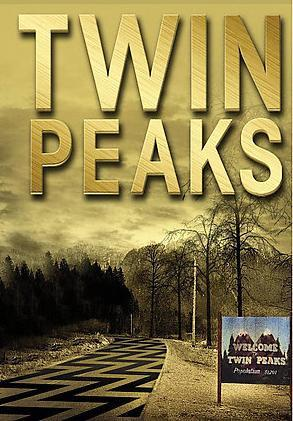
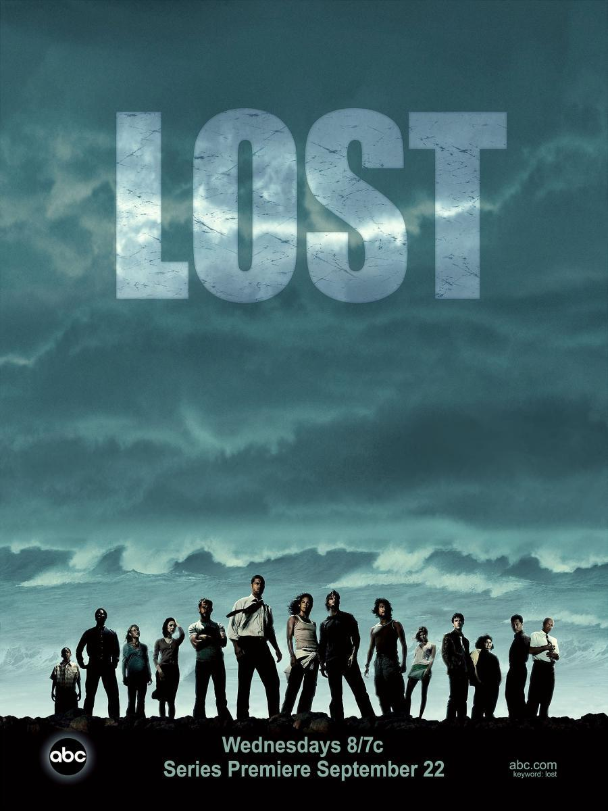

Twin Peaks (1990)
Creada por David Lynch y Mark Frost. Un drama criminal mezclado con una dosis surrealista, esta serie es acerca del agente del FBI Dale Cooper, quien viaja a la pequeña ciudad de Twin Peaks para resolver el asesinato de una aparentemente inocente estudiante de secundaria Laura Palmer. Nada es lo que parece, efectos visuales, personas misteriosas, personajes excéntricos y sueños salvajes, llevan este programa a un nuevo nivel.

Better Call Saul (2015)
Creada por Vince Gilligan y Peter Gould. Precuela de la serie "Breaking Bad", centrada en el personaje del abogado Saul Goodman (Bob Odenkirk), seis años antes de conocer a Walter White. La serie cuenta cómo un picapleitos de poca monta llamado Jimmy McGill, con problemas para llegar a fin de mes, se convierte en el abogado criminalista Saul Goodman.
The Boys (2019)
Creada por Evan Goldberg, Seth Rogen y Eric Kripke. Basada en el comic homónimo, la serie tiene lugar en un mundo en el que los superhéroes representan el lado oscuro de la celebridad y la fama. Un grupo de vigilantes que se hacen llamar "The Boys" decide hacer todo lo posible por frenar a los superhéroes que están perjudicando a la sociedad, independientemente de los riesgos que ello conlleva.
